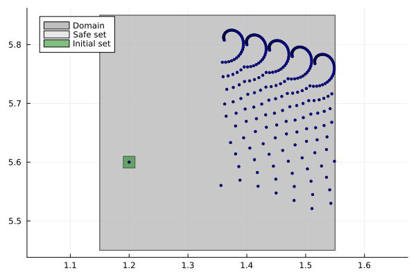
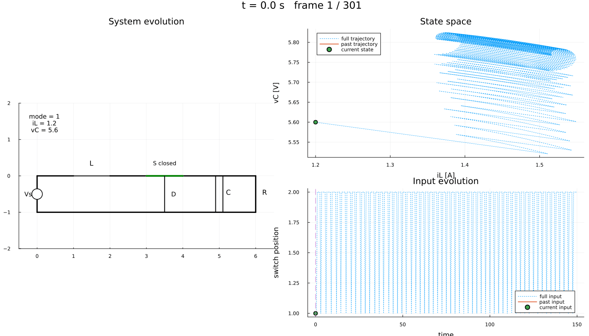

DC-DC converter: keeping a boost converter in a safe band
| System | 2-D continuous, switched by the input |
| Specification | safety |
| Solver | uniform grid abstraction, twice |
A boost DC-DC converter, widely studied as a hybrid control benchmark (Girard et al., 2010). The state is the inductor current and the capacitor voltage, $x = (i_L, v_C)$, and the only control is the position of a switch, which selects between two affine dynamics:
\[\dot{x} = A_p x + b, \qquad p \in \{1, 2\}.\]
The goal is not to reach anything — it is to never leave a band around the operating point, using nothing but the switching signal.
This page does one model twice. The plant and the specification are written once, and then handed to two different abstractions: a uniform grid, and a grid of ellipsoidal cells that exploits the converter's incremental stability. Nothing about the model changes between them, which is the point of putting every solver behind the same interface.
using StaticArrays, JuMP, PlotsThe first model supplies its dynamics as a Julia function and needs no symbolic backend; the hybrid model at the end writes them as ∂ expressions, which does.
using Symbolics, MathOptSymbolicAD
using Dionysos
const DI = Dionysos
const UT = DI.Utils
const ST = DI.System
const MP = DI.Mapping
const SY = DI.Symbolic
const AB = DI.Optim.AbstractionDionysos.Optim.AbstractionThe matrices and the switched vector field come from the problem library, so this page and the benchmark drivers describe the same converter.
include(
joinpath(dirname(dirname(pathof(Dionysos))), "problems", "DCDC", "dcdc_converter.jl"),
)Main.DCDCThe model
x_low, x_upp = [1.15, 5.45], [1.55, 5.85]
safe = UT.box(SVector(x_low...), SVector(x_upp...))
initial = UT.box(SVector(1.19, 5.59), SVector(1.21, 5.61))LazySets.HyperrectangleModule.Hyperrectangle{Float64, StaticArraysCore.SVector{2, Float64}, StaticArraysCore.SVector{2, Float64}}([1.2, 5.6], [0.010000000000000009, 0.010000000000000675])direct_model rather than Model: the roles below are recorded against the optimizer, and a cached model has not handed it the variables yet.
model = direct_model(Dionysos.Optimizer());
@variable(model, x_low[i] <= x[i = 1:2] <= x_upp[i])
@variable(model, 1 <= u <= 2);The dynamics are a Julia function, not a JuMP expression: Aₚ x + b is selected by an if on the input, which no algebraic expression can express. Supplying f leaves the front-end nothing to infer from, so two things have to be said explicitly — which variables are states, and whether f is a vector field or a one-step map.
set_role!(x, Dionysos.STATE)
set_attribute(model, "dynamics", DCDC.dynamic())
set_attribute(model, "time_domain", Dionysos.CONTINUOUS);Safety: start in a small box around the operating point, and never leave the band. Always rather than ∉ — staying inside is the requirement, so those states must remain representable for the synthesis to reason about leaving them.
@constraint(model, x in Start(initial))
@constraint(model, x in Always(safe));The abstraction
The input grid is what makes the switch a two-valued signal: one cell wide, centred on 1, over the input bounds [1, 2].
hx = SVector(2.0 / 4.0e3, 2.0 / 4.0e3)
set_attribute(model, "state_grid", MP.GridFree(SVector(0.0, 0.0), hx))
set_attribute(model, "input_grid", MP.GridFree(SVector(1), SVector(1)))
set_attribute(model, "jacobian_bound", DCDC.jacobian_bound())
set_attribute(model, "time_step", 0.5)
set_attribute(model, "approx_mode", AB.UniformGridAbstraction.GROWTH)
set_attribute(model, "print_level", 0);Solving
optimize!(model);┌ Warning: Noise is not yet accounted for in system abstraction.
└ @ Dionysos.Optim.Abstraction.UniformGridAbstraction ~/.julia/packages/Dionysos/gFZKe/src/optim/continuous_systems/UniformGridAbstraction/alternating_simulation_problem.jl:642Results
termination_status(model)OPTIMAL::TerminationStatusCode = 1concrete_problem = get_attribute(model, "concrete_problem");
concrete_controller = get_attribute(model, "concrete_controller");
invariant_set = get_attribute(model, "invariant_set");The certificate of a safety problem is the maximal controlled-invariant set: every state in it can be kept inside the band forever, and no state outside it can.
Closed loop
trajectory = Dionysos.simulate(model, SVector(1.2, 5.6); nsteps = 300)Dionysos.System.Trajectory{StaticArraysCore.SVector{2, Float64}, Vector{StaticArraysCore.SVector{1, Int64}}, Nothing, Nothing, Nothing}(StaticArraysCore.SVector{2, Float64}[[1.2, 5.6], [1.3560156983891223, 5.560340109699785], [1.5107366681535719, 5.520961095631469], [1.480350719429931, 5.534818989997086], [1.44980384716473, 5.547499783738571], [1.4191363306852203, 5.559006830245863], [1.3883879481081962, 5.569344876713857], [1.5428402700456059, 5.5299020897755495], [1.5118486667803934, 5.544822822894211], [1.4806670586019997, 5.558536962455549] … [1.5155412367088017, 5.76896150859325], [1.4769513511372376, 5.781087349554191], [1.4383371322425946, 5.791760247978466], [1.3997466068282056, 5.800990485767817], [1.3612269974030997, 5.808789958544043], [1.5159047201220606, 5.767651392020321], [1.47735439972668, 5.77980008721012], [1.4387786103007683, 5.7904970589908045], [1.4002253495697334, 5.7997525398929435], [1.3617418128708125, 5.807578375520923]], StaticArraysCore.SVector{1, Int64}[[1], [1], [2], [2], [2], [2], [1], [2], [2], [2] … [1], [2], [2], [2], [2], [1], [2], [2], [2], [2]], nothing, nothing, nothing)Visualisation
fig = plot(; aspect_ratio = :equal)
plot!(concrete_problem)
plot!(trajectory; with_arrows = false, ms = 2.0, color = :blue)
The converter circuit alongside the state and the switching signal. frame_step keeps a 300-step trajectory to a manageable number of frames, and fps is chosen so the animation runs for about ten seconds.
anim = Dionysos.animate_trajectory_dashboard(
DCDC.system_plot!(),
trajectory;
xdims = (1, 2),
udims = (1,),
Δt = 0.5,
frame_step = 6,
xlabel_state = "iL [A]",
ylabel_state = "vC [V]",
ylabel_input = "switch position",
)
gif(anim; fps = 5)
The same problem, a different abstraction
concrete_problem is a solver-independent object: a system plus a SafetyProblem. Handing it to another optimizer needs no change to the model at all — only a different discretisation.
This converter is incrementally stable, which means trajectories from nearby states converge. That justifies covering the state space with ellipsoidal cells shaped by a Lyapunov matrix P, instead of squares: fewer, better-adapted cells for the same guarantee.
origin = SVector(0.0, 0.0)
η = (2 / 4.0) * 10^(-3)
ϵ = 0.1 * 0.01
P = SMatrix{2, 2}(1.0224, 0.0084, 0.0084, 1.0031)
state_grid = MP.GridEllipsoidalRectangular(origin, SVector(η, η), P / ϵ)
optimizer = MOI.instantiate(AB.UniformGridAbstraction.Optimizer)
MOI.set(optimizer, MOI.RawOptimizerAttribute("concrete_problem"), concrete_problem)
MOI.set(optimizer, MOI.RawOptimizerAttribute("state_grid"), state_grid)
MOI.set(
optimizer,
MOI.RawOptimizerAttribute("input_grid"),
MP.GridFree(SVector(1), SVector(1)),
)
MOI.set(optimizer, MOI.RawOptimizerAttribute("jacobian_bound"), DCDC.jacobian_bound())
MOI.set(optimizer, MOI.RawOptimizerAttribute("time_step"), 0.5)
MOI.set(
optimizer,
MOI.RawOptimizerAttribute("approx_mode"),
AB.UniformGridAbstraction.CENTER_SIMULATION,
)
MOI.set(optimizer, MOI.RawOptimizerAttribute("print_level"), 0)
MOI.optimize!(optimizer);┌ Warning: Noise is not yet accounted for in system abstraction.
└ @ Dionysos.Optim.Abstraction.UniformGridAbstraction ~/.julia/packages/Dionysos/gFZKe/src/optim/continuous_systems/UniformGridAbstraction/alternating_simulation_problem.jl:642MOI.get(optimizer, MOI.TerminationStatus())OPTIMAL::TerminationStatusCode = 1abstract_system2 = MOI.get(optimizer, MOI.RawOptimizerAttribute("abstract_system"));
controller2 = MOI.get(optimizer, MOI.RawOptimizerAttribute("concrete_controller"));
traj2 = ST.get_closed_loop_trajectory(
MOI.get(optimizer, MOI.RawOptimizerAttribute("discrete_time_system")),
controller2,
SVector(1.2, 5.6),
300,
);
fig2 = plot(; aspect_ratio = :equal)
plot!(concrete_problem)
plot!(traj2; with_arrows = false, ms = 2.0, color = :blue)The same plant, a different model
Everything above treats the converter as one continuous system whose input selects the dynamics. But the plant is just as honestly described as a hybrid automaton: two modes, one per switch position, each carrying its own affine dynamics, with transitions between them.
Neither reading is a workaround for the other — they are two ways of saying the same thing, and the front-end expresses both. What changes is not the plant but the vocabulary: @mode instead of an input dimension, and add_transition! instead of if u == 1.
Note what is absent: no input variable. Here the switch is the only control, so no mode has a continuous input at all. Its input space is zero-dimensional — a space with exactly one point, which is the action "leave the switch where it is" and is what lets the state evolve inside a mode. Nothing needs to be declared for it.
hybrid = Model(Dionysos.Optimizer);
@variable(hybrid, 1.15 <= xh[i = 1:2] <= 1.55)
set_lower_bound(xh[2], 5.45)
set_upper_bound(xh[2], 5.85)
@mode(hybrid, closed)
@mode(hybrid, opened);One mode per switch position, each with its own affine dynamics.
A1, A2 = DCDC.A1(), DCDC.A2()
bvec = SVector(DCDC.Params().vs / DCDC.Params().xL, 0.0)
@constraint(closed, ∂(xh[1]) == A1[1, 1] * xh[1] + A1[1, 2] * xh[2] + bvec[1])
@constraint(closed, ∂(xh[2]) == A1[2, 1] * xh[1] + A1[2, 2] * xh[2] + bvec[2])
@constraint(opened, ∂(xh[1]) == A2[1, 1] * xh[1] + A2[1, 2] * xh[2] + bvec[1])
@constraint(opened, ∂(xh[2]) == A2[2, 1] * xh[1] + A2[2, 2] * xh[2] + bvec[2]);A guard spanning the whole safe set means the switch is always available — which is exactly what a converter's switch is: the controller decides, the state does not gate it.
add_transition!(hybrid, closed => opened) do t
return @constraint(t, xh in Guard(safe))
end
add_transition!(hybrid, opened => closed) do t
return @constraint(t, xh in Guard(safe))
end
@constraint(closed, xh in Always(safe))
@constraint(opened, xh in Always(safe));The discretisation is per mode, as always for a hybrid model. This one is deliberately four times coarser than the grid used above: the point of this section is the encoding, and the fine grid is already exercised by the first model.
for md in (closed, opened)
set_attribute(md, "state_grid", MP.GridFree(SVector(0.0, 0.0), 4 .* hx))
set_attribute(md, "time_step", 0.5)
set_attribute(md, "approx_mode", AB.UniformGridAbstraction.GROWTH)
set_attribute(md, "jacobian_bound", u -> DCDC.jacobian_bound()(SVector(1)))
set_attribute(md, "print_level", 0)
end
optimize!(hybrid);>>Setting up the model
>>Model setup complete
Construct the Hybrid System Abstraction: started
┌ Warning: Noise is not yet accounted for in system abstraction.
└ @ Dionysos.Optim.Abstraction.UniformGridAbstraction ~/.julia/packages/Dionysos/gFZKe/src/optim/continuous_systems/UniformGridAbstraction/alternating_simulation_problem.jl:642
┌ Warning: Noise is not yet accounted for in system abstraction.
└ @ Dionysos.Optim.Abstraction.UniformGridAbstraction ~/.julia/packages/Dionysos/gFZKe/src/optim/continuous_systems/UniformGridAbstraction/alternating_simulation_problem.jl:642
Construct the Hybrid System Abstraction: terminated with success: 306973 transitions created
compute_largest_invariant_set! started
compute_controller_safe! started
Safety: terminated with true
Invariant set size: 79202termination_status(hybrid)OPTIMAL::TerminationStatusCode = 1The abstract input alphabet shows the encoding: one continuous input per mode — holding the switch — and one switching input per transition.
input_map = get_attribute(hybrid, "abstract_system").input_mapping;
(input_map.continuous_inputs, input_map.switching_inputs)(2, 2)The augmented state of a hybrid model is (x, mode), so the closed loop reports which switch position the controller chose at each step.
hybrid_traj = Dionysos.simulate(hybrid, (SVector(1.2, 5.6), 1); nsteps = 200)
sort(unique(ST.modes(hybrid_traj)))2-element Vector{Int64}:
1
2References
- A. Girard, G. Pola and P. Tabuada, "Approximately Bisimilar Symbolic Models for Incrementally Stable Switched Systems," in IEEE Transactions on Automatic Control, vol. 55, no. 1, pp. 116-126, Jan. 2010.
- S. Mouelhi, A. Girard, and G. Gössler. “CoSyMA: a tool for controller synthesis using multi-scale abstractions”. In: HSCC. ACM. 2013, pp. 83–88.
- A. Girard. “Controller synthesis for safety and reachability via approximate bisimulation”. In: Automatica 48.5 (2012), pp. 947–953.
This page was generated using Literate.jl.